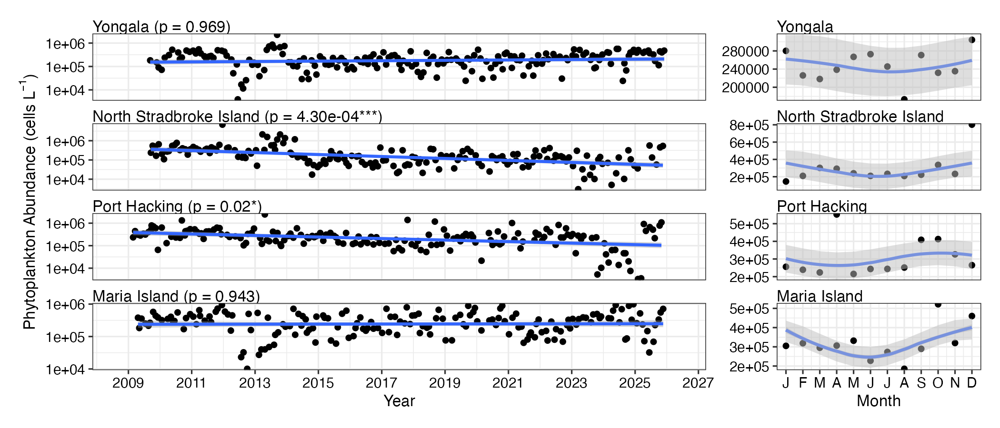
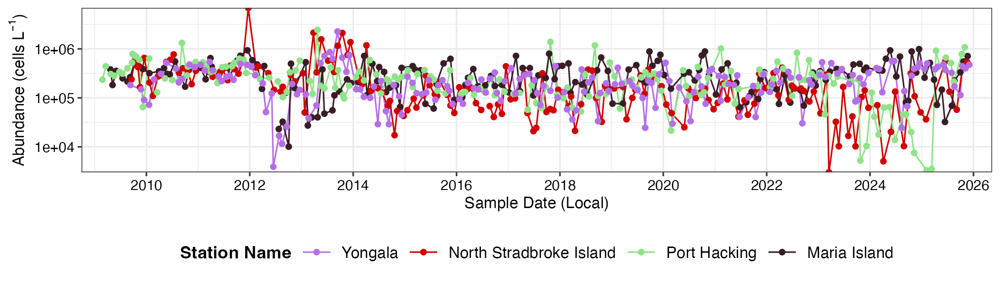
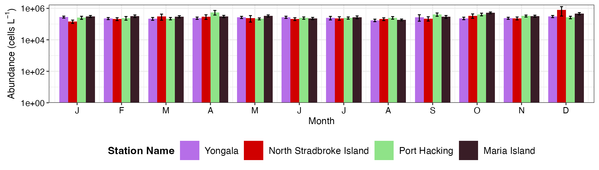
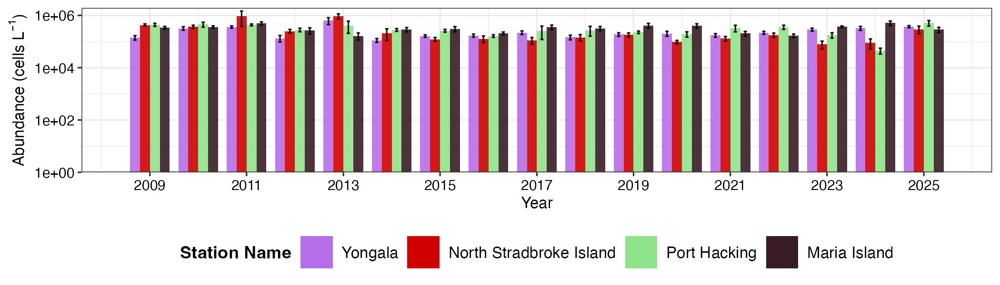
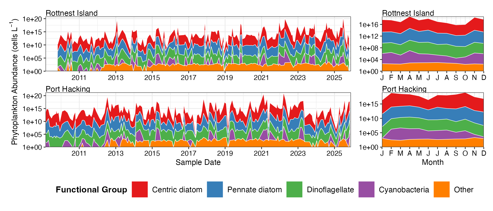
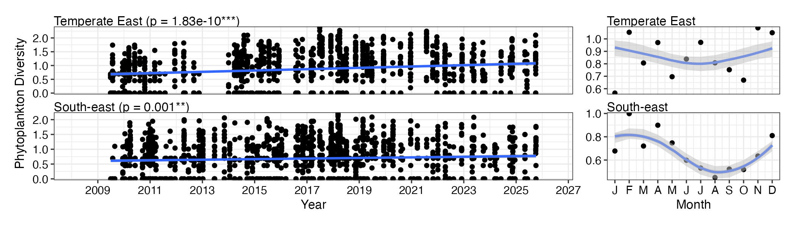
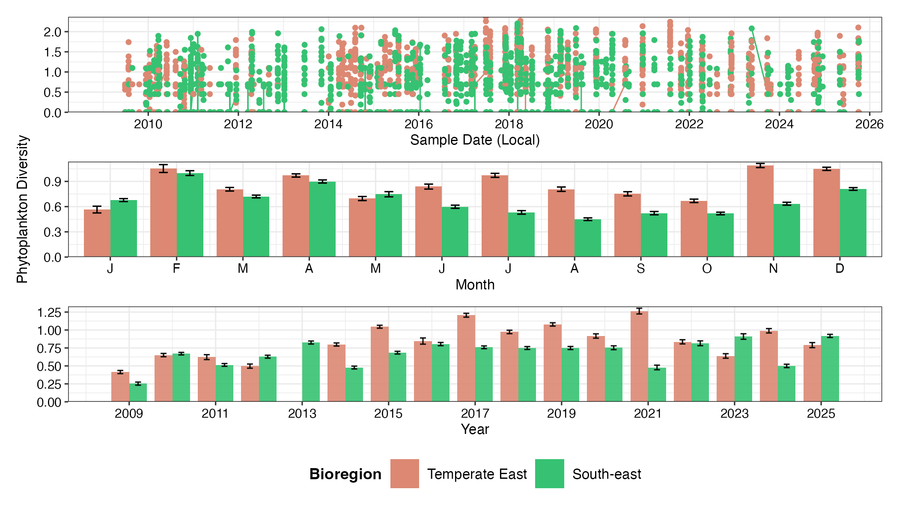
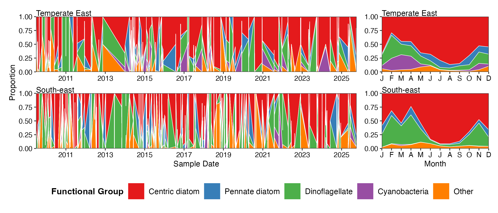

National Reference Stations
Have a look at the file and see what is available for plotting, by downloading the file you can inspect the parameters and the Stations available.
NRSz <- planktonr::pr_get_Indices(Survey = "NRS", Type = "Phytoplankton")
unique(NRSz$Parameters)
#> [1] "PhytoBiomassCarbon_pgL" "PhytoAbundance_CellsL"
#> [3] "DiatomDinoflagellateRatio" "AvgCellVol_um3"
#> [5] "NoPhytoSpecies_Sample" "ShannonPhytoDiversity"
#> [7] "PhytoEvenness" "NoDiatomSpecies_Sample"
#> [9] "ShannonDiatomDiversity" "DiatomEvenness"
#> [11] "NoDinoSpecies_Sample" "ShannonDinoDiversity"
#> [13] "DinoflagellateEvenness"
unique(NRSz$StationName)
#> [1] Darwin Esperance Kangaroo Island
#> [4] Maria Island Ningaloo North Stradbroke Island
#> [7] Port Hacking Rottnest Island Bonney Coast
#> [10] Yongala
#> 10 Levels: Darwin Yongala Ningaloo North Stradbroke Island ... Maria IslandTrend Analysis
Here we plot the abundance of phytoplankton as a time series and a monthly climatology for the National Reference Stations around Australia. This can give us some information on the long term trends. At this time, early 2023, phytoplankton abundance seem to be generally decreasing along the east coast and this may have implications for zooplankton and higher trophic levels as phytoplankton is thought of as the base of the food web.
NRSp <- planktonr::pr_get_Indices(Survey = "NRS", Type = "Phytoplankton") %>%
filter(Parameters == "PhytoAbundance_CellsL") %>%
filter(StationCode %in% c("YON", "NSI", "PHB", "MAI"))
p1 <- planktonr::pr_plot_Trends(NRSp, Trend = "Raw", method = "lm", trans = "log10")
p2 <- planktonr::pr_plot_Trends(NRSp, Trend = "Month", method = "loess")
p1 + p2 +
ggplot2::theme(axis.title.y = ggplot2::element_blank()) + # Remove y-title from 2nd column
patchwork::plot_layout(widths = c(3, 1), guides = "collect")
Climatologies
We can plot this same data in a different format to better compare between stations.
First we plot phytoplankton abundance at the 4 east coast NRS stations with log10 scaling.
(p1 <- planktonr::pr_plot_TimeSeries(NRSp, trans = "log10") +
ylab(rlang::expr(paste("Abundance (cells L"^-1,")"))))
Then we can plot the same data as monthly means.
(p2 <- planktonr::pr_plot_Climatology(NRSp, Trend = "Month", trans = "log10") +
ylab(rlang::expr(paste("Abundance (cells L"^-1,")"))))
And then as Annual means.
(p3 <- planktonr::pr_plot_Climatology(NRSp, Trend = "Year", trans = "log10") +
ylab(rlang::expr(paste("Abundance (cells L"^-1,")"))))
Functional Groups
We can learn more by looking at the abundances in terms of functional groups. These two stations are at similar latitudes but Rottnest is on the West Coast and Port Hacking is on the East Coast. There patterns look similar for both stations but there is a clearer seasonal response at Rottnest as cyanobacteria becomes less abundant in winter.
FG <- pr_get_FuncGroups(Survey = "NRS", Type = "Phytoplankton") %>%
dplyr::filter(StationCode %in% c("ROT", "PHB"))
p1 <- planktonr::pr_plot_tsfg(FG, Scale = "Actual")
p2 <- planktonr::pr_plot_tsfg(FG, Scale = "Actual", Trend = "Month") +
ggplot2::theme(axis.title.y = element_blank())
p1 + p2 +
patchwork::plot_layout(widths = c(3,1), guides = "collect") &
theme(legend.position = "bottom")
Continuous Plankton Recorder
Have a look at the file and see what is available for plotting, by downloading the file you can inspect the parameters and the bioregions available.
CPRz <- planktonr::pr_get_Indices("CPR", "Phytoplankton")
unique(CPRz$Parameters)
#> [1] "PCI" "PhytoBiomassCarbon_pgm3"
#> [3] "PhytoAbundance_Cellsm3" "DiatomDinoflagellateRatio"
#> [5] "AvgCellVol_um3" "NoPhytoSpecies_Sample"
#> [7] "ShannonPhytoDiversity" "PhytoEvenness"
#> [9] "NoDiatomSpecies_Sample" "ShannonDiatomDiversity"
#> [11] "DiatomEvenness" "NoDinoSpecies_Sample"
#> [13] "ShannonDinoDiversity" "DinoflagellateEvenness"
unique(CPRz$BioRegion)
#> [1] South-east None South-west
#> [4] Southern Ocean Region North-west North
#> [7] Temperate East Coral Sea
#> 8 Levels: North North-west Coral Sea Temperate East South-east ... NoneTrend Analysis
Here we can compare the long term time series phytoplankton abundance data for the South-east and Temperate-east areas of Australia. Due to way the CPR data is collected this is easier to visualise in a regional context. Here we are plotting the Shannon diversity of phytoplankton in two regions, the time series data indicates whilst this is stable in the South-east region it may be increasing in the Temperate-east region. There is also more distinct seasonal variation in the South-east region.
CPRp <- planktonr::pr_get_Indices("CPR", "Phytoplankton") %>%
filter(Parameters == "ShannonPhytoDiversity") %>%
filter(BioRegion %in% c("South-east", "Temperate East"))
p1 <- planktonr::pr_plot_Trends(CPRp, Trend = "Raw", method = "lm", trans = "identity")
p2 <- planktonr::pr_plot_Trends(CPRp, Trend = "Month", method = "loess")
p1 + p2 +
ggplot2::theme(axis.title.y = ggplot2::element_blank()) + # Remove y-title from 2nd column
patchwork::plot_layout(widths = c(3, 1), guides = "collect")
Climatologies
We can visualise this data in a different format to better show the variation between regions.
p1 <- planktonr::pr_plot_TimeSeries(CPRp, trans = "identity") + theme(legend.position = "none", axis.title.y = element_blank())
p2 <- planktonr::pr_plot_Climatology(CPRp, Trend = "Month", trans = "identity") + theme(legend.position = "none")
p3 <- planktonr::pr_plot_Climatology(CPRp, Trend = "Year", trans = "identity") + theme(legend.position = "bottom", axis.title.y = element_blank())
wrap_plots(p1, p2, p3, ncol = 1)
Functional Groups
Centric diatoms dominate the CPR samples especially in the winter months when the proportion of dinoflagellates in the samples reduces. This pattern is similar in both regions.
FG <- pr_get_FuncGroups(Survey = "CPR", Type = "Phytoplankton") %>%
filter(BioRegion %in% c("South-east", "Temperate East"))
p1 <- pr_plot_tsfg(FG, Scale = "Proportion")
p2 <- pr_plot_tsfg(FG, Scale = "Proportion", Trend = "Month") +
theme(axis.title.y = element_blank())
p1 + p2 +
patchwork::plot_layout(widths = c(3,1), guides = "collect") &
theme(legend.position = "bottom")